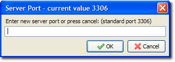
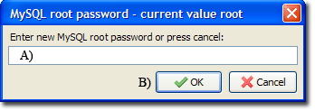

|
|
MySQL |
MySQL is an open source database server. When used in conjunction with PHP scripts, powerful and dynamic server-side applications can be created. MySQL server administration is performed using phpMyAdmin and The Uniform Server’s integrated utilities. This page covers the MySQL UniController menu.
Note: With the appropriate module (plugin) you can run either MySQL or Mariadb server. These are equivalent, UniController text matches that plugin installed. This documentation makes no distinction and refers to MySQL, while reading this documentation interchange MySQL and MariaDB as appropriate.
Change MySQL port
The "Change MySQL port" menu allows you to specify the MySQL port (Standard port 3306).
Change MySQL port
MySQL > Change MySQL port
|
 |
Note 1: For new port to become effective you must restart the servers.
General Notes:
The Uniform Server Zero XI sets the port environment variable MYSQL_TCP_PORT and updates the user configuration file user_configuration.bat. The environment variable MYSQL_TCP_PORT is used by MySQL standard utilities.
Change MySQL root password
Starting UniController provides the first opportunity to change the current root password, it is highly recommended that you set this password at the first opportunity.
Alternatively you can skip setting a new MySQL root password and run this menu option later using:
MySQL > Change MySQL root password
|
 |
Note 1: Clicking the cancel button no action is taken. You can set the password later.
Note 2: For detailed information, see MySQL - Change password
Restore default password (root)
Restoring the MySQL root password is fully automated just click the following sub-menu:
MySQL > Restore default password (root)
You can run restore password with or without the MySQL server running. In either situation the MySQL server is started or re-started with no grant tables and the password restored, after restoration the MySQL server is stopped.
Note: For detailed information, see MySQL - Restore password
Create Delete Database
There are three methods for creating or deleting a database: via command prompt, phpMyAdmin or UniController.
For detailed information, see MySQL Create Delete Database
Create Restricted MySQL User
A restricted user has no root privileges and is constrained to a single database.
There are three methods for creating a restricted user: at a command prompt, with phpMyAdmin or through UniController.
For detailed information, see MySQL Create Restricted User
Edit Restricted MySQL User
The same aspects for creating a restricted user (above) apply to editing restricted users.
For detailed information, see MySQL Edit Restricted User
Database backup
The Uniform Server's database backup allows for manual backup of a selected database.
For detailed information, see MySQL Database backup restore
Database restore
The Uniform Server's database restore allows for manual restore of a selected database.
For detailed information, see MySQL Database backup restore
Edit Config file my.ini
The following sub-menu opens the MySQL configuration file in notepad, allowing you to directly edit the file:
MySQL > Edit Config file my.ini
Location of the configuration file: UniServerZ\core\mysql\my.ini
MySQL error log
This menu option provides a convenient short cut, allowing you to view the MySQL server log file. If you are experiencing problems with the server, this should be your first port of call; its content may shed light on a particular issue.
MySQL > MySQL error log
The path to the log file is: UniServerZ\core\mysql\data\mysql.err
Note: Depending on where you extracted UniServer, the path may differ.
A short extract from the file:
130706 11:40:41 [Note] Plugin 'FEDERATED' is disabled. 130706 11:40:41 [Note] Plugin 'InnoDB' is enabled. 130706 11:40:43 [Note] Event Scheduler: Loaded 0 events 130706 11:40:43 [Note] C:\UniServer\core\mysql\bin\mysqld1.exe: ready for connections. Version: '5.5.14' socket: '' port: 3306 MySQL Community Server (GPL) 130706 11:55:35 [Note] C:\UniServer\core\mysql\bin\mysqld1.exe: Normal shutdown 130706 11:55:35 [Note] Event Scheduler: Purging the queue. 0 events 130706 11:55:36 [Note] C:\UniServer\core\mysql\bin\mysqld1.exe: Shutdown complete |